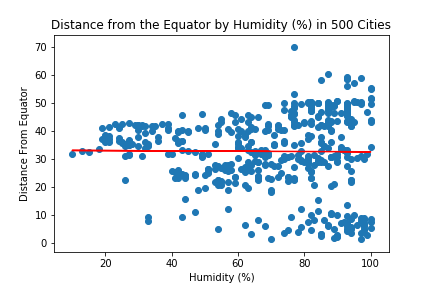

Weather Project
This project demonstrates a simple relationship between weather and lattitude. Using the OpenWeatherMap API, I pulled data from 500 random cities from around the world. I then creted a series of simple regression analyes to show how each of four factors; maximum temperature, cloudiness, windiness, and humidity; are asscoiated with distance from the equator. Each of these four variabels are separately regressed along distance from the equtor to create four charts. Here I display each chart and discuss plausible substantive interpretations for the data. Note: because these are simple linear regression models, it does not matter which variable is treated as the dependent variable in each individual analysis. In ordr to therefore used "distance from the equator" as my x-axis and treated it as the dependent variable, even though substantively it is the independent variable in every analysis.
Visualizations

|
 |

|

|
Four simple linear regression models